Construction contexts · all steps
The same visible support can expose different edits. Retained history can answer construction questions; an independent capture still draws the current result. Different overlapping reads can become genuinely different construction networks.
C01 · Equal support, different replacement scopes
Both drawings have exactly corresponding formal segment support. One construction has a closed ordered path; the other resets before each side. A whole-path replacement can select only actual paths in its supplied source. This is a difference in exposed focus granularity, not an impossibility theorem about other encodings.
One closed path
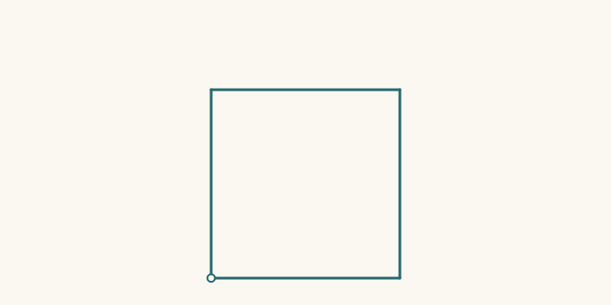
1 paths · 4 chords · 1 closure claims · 1 rungs · 0 blocked edit evidence
1 paths · 4 chords · 1 closure claims · 2 rungs · 1 blocked edit evidence
Four exposed side paths
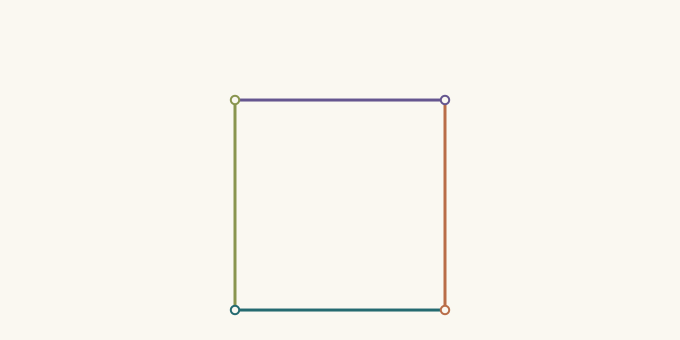
4 paths · 4 chords · 0 closure claims · 1 rungs · 0 blocked edit evidence
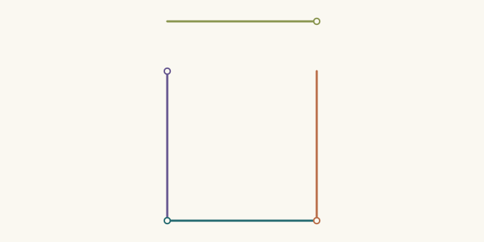
4 paths · 4 chords · 0 closure claims · 2 rungs · 0 blocked edit evidence
C02 · Reformulation changes the next available focus
A ladder may withdraw a traversal/closure contract while retaining exact support correspondence. Moving the newly exposed rail leaves a gap. A subsequent explicit replacement extends both side reaches and restores a declared closed walk; this is a proposed construction, not an automatic solver.
Split, move, reconnect
1 paths · 4 chords · 1 closure claims · 1 rungs · 0 blocked edit evidence
4 paths · 4 chords · 0 closure claims · 2 rungs · 0 blocked edit evidence
4 paths · 4 chords · 0 closure claims · 3 rungs · 0 blocked edit evidence
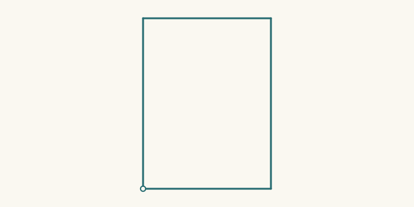
1 paths · 4 chords · 1 closure claims · 4 rungs · 0 blocked edit evidence
C03 · Chord detail becomes a reusable construction unit
A closed-path context does support local chord refinement: every replacement chain must retain its selected chord's formal endpoint displacement. The coarse square survives as history while the current shape acquires new bends. A further layer repeats the complete detailed unit.
Preserve ends, change contour
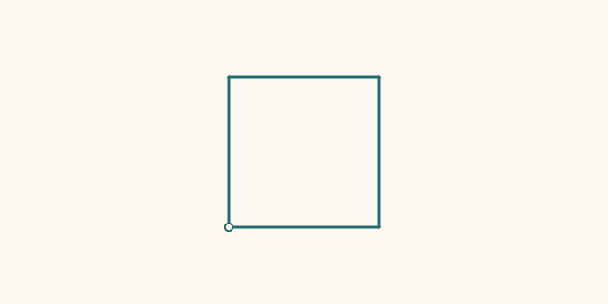
1 paths · 4 chords · 1 closure claims · 1 rungs · 0 blocked edit evidence
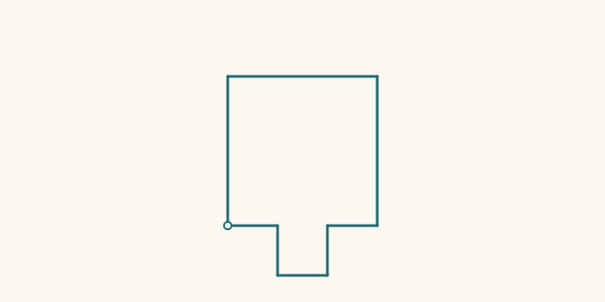
1 paths · 8 chords · 1 closure claims · 2 rungs · 0 blocked edit evidence
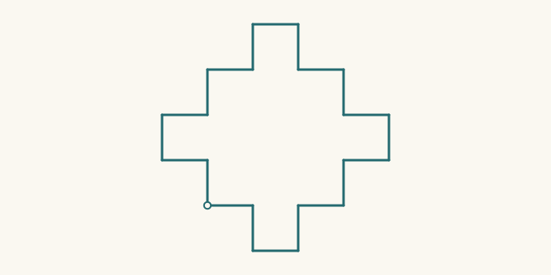
1 paths · 20 chords · 1 closure claims · 3 rungs · 0 blocked edit evidence
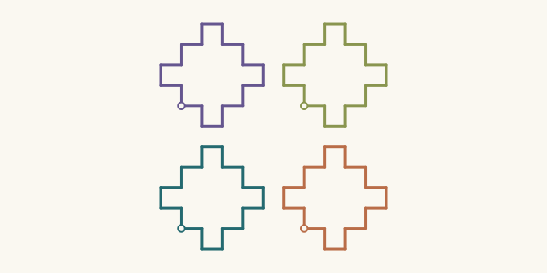
4 paths · 80 chords · 4 closure claims · 4 rungs · 0 blocked edit evidence
C04 · Construction memory is a useful optional context
The current notched contour can retain the actual square construction or be captured into an independently identified native world. The loss receipt stays outside the standalone result. Visible agreement does not transfer old selector identities, and a remembered square never proves that the current fine chain is straight.
Keep construction memory
1 paths · 20 chords · 1 closure claims · 3 rungs · 0 blocked edit evidence
1 paths · 20 chords · 1 closure claims · 3 rungs · 0 blocked edit evidence
Independent capture
1 paths · 20 chords · 1 closure claims · 1 rungs · 0 blocked edit evidence
1 paths · 20 chords · 1 closure claims · 1 rungs · 0 blocked edit evidence
1 paths · 20 chords · 1 closure claims · 2 rungs · 1 blocked edit evidence
C05 · one field, three next constructions
V01 · Courts become a mesh
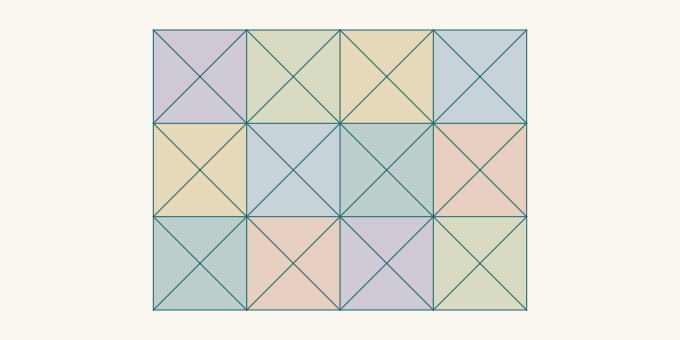
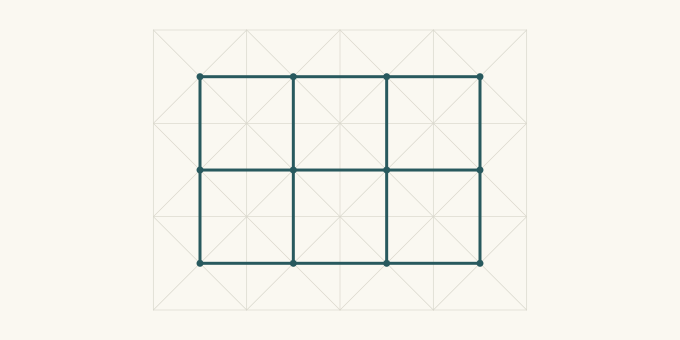
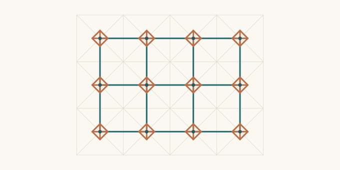
V02 · Vertex diamonds become a shifted mesh
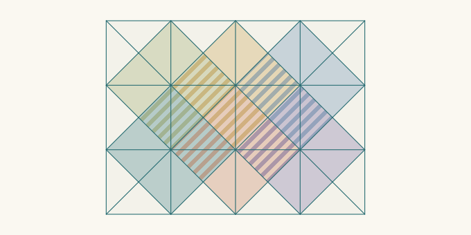
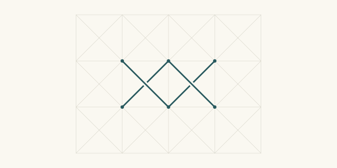
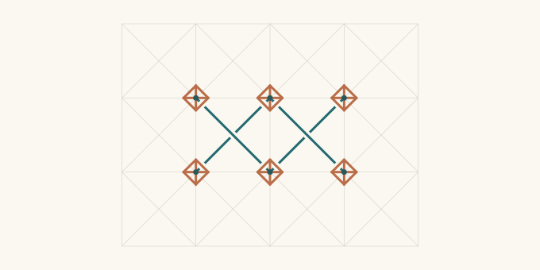
V03 · Courts become broad courses
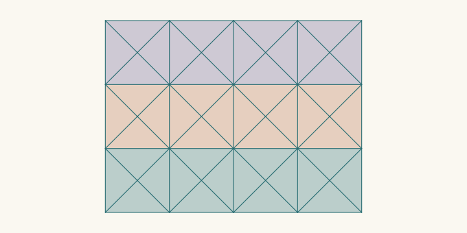
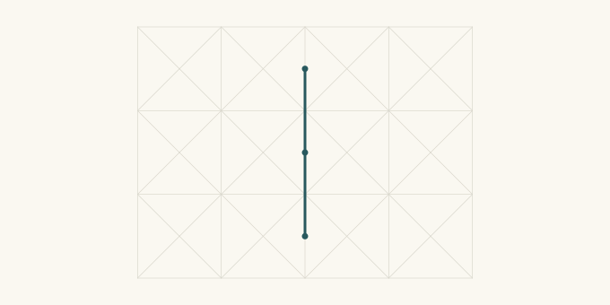
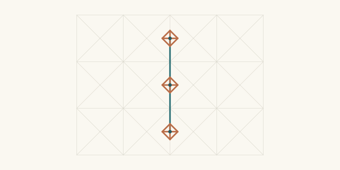